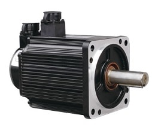
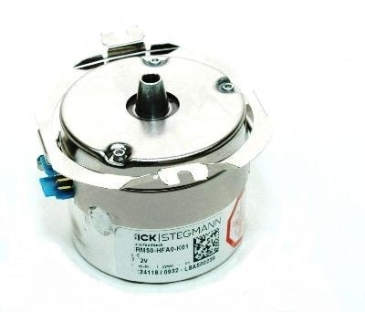
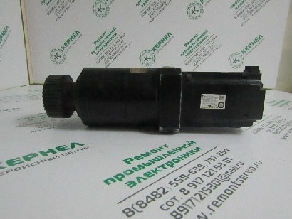

РЕМОНТ СЕРВОДВИГАТЕЛЕЙ И СЕРВОМОТОРОВ
НЕИСПРАВНОСТИ
В данной статье мы с вами разберем еще одну распространённую проблему, которая возникает на серводвигателях и сервомоторах.
Часто происходит, что вдруг у вас на производстве останавливается серводвигатель. Рабочий, обслуживающий станок, сразу начинает пытаться разобрать сервомотор. Снимает заднюю крышку мотора серво. Потом начинает снимать с вала двигателя датчик положения ротора (энкодер или резольвер).
Осмотрев внутреннее состояние двигателя серво и ничего там не увидев, начинают собирать двигатель обратно. Остановка двигателя серво, это не обозначает то, что проблема именно с этим двигателем. Проблема может быть и с сервоприводом (серводрайвером), с кабелем и любая другая. Когда ваш оператор или киповец снял энкодер с вала мотора, то он сбил настройки положения вала относительно ротора.
Так же происходит и с проблемой неисправных подшипников. Зашумели подшипники машины. Оператор, который обслуживает этот станок сразу начинает пытаться разобрать мотор. Снимает заднюю крышку устройства. Потом начинает снимать с вала двигателя датчик положения ротора (энкодера или резольвера). Производит замену подшипников, начинают собирать двигатель обратно. Но когда ваш оператор снял энкодер с вала, то он сбил настройки положения вала относительно ротора.
НАСТРОЙКА ЭНКОДЕРА
Что нужно делать если вы разбирали сервомотор и снимали энкодер или резольвер? Что нужно сделать если вы сбили настройки энкодера серводвигателя? Отправлять ваше устройство на настройку сервомотора и серводвигателя в специализированную мастерскую. В сервисе проведут настройку вашего мотора на специализированном оборудовании по настройке сервомоторов. Дадут вам гарантию. Настройка обычно происходит в течение 1 рабочего дня.
Что часто делают на оборудовании операторы или другие представители станка? Начинают самостоятельно проводить разнообразные манипуляции, это приводит к поломке энкодера или резольвера. Если энкодер ломается окончательно, то потребуется его замена на новый. Поставка нового часто бывает от 2 до 14 недель. Так, что не квалифицированные самостоятельные ремонты приводят к остановке вашего оборудования на длительное время и приводит к срыву ваших заказов, и недовольству ваших клиентов.
РЕМОНТ SERVOMOTOR
В Сервисный центр поступил на ремонт серводвигатель (сервомотор) Yaskawa SGMJV-08AAA61. С неисправностью: заказчик менял самостоятельно подшипники, а после замены подшипников сервопривод выдает ошибку энкодера или ошибку серводвигателя.
По результатам диагностики выявились следующие неисправности: Положение энкодера сбито относительно вала машины. Техническая служба Сервисного центра "Кернел" произвела настройку энкодера. Произведена проверка работоспособности двигателя совместно с сервоприводом Yaskawa. Все работы выполнены в течение одного рабочего дня.
На серводвигатель после настройки энкодера предоставляется гарантия 6 месяцев.
Покупку нового мотора проводить очень дорого. Выгоднее настроить серводвигатель в Сервисном центре. Юстировка энкодера сервомотора эта услуга является недорогой и быстрой по срокам.